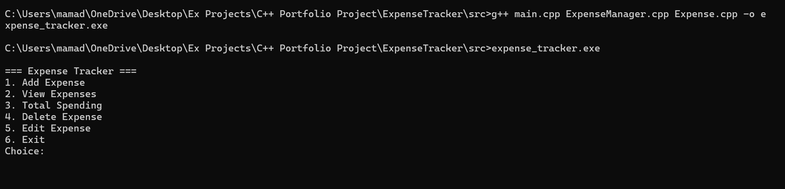
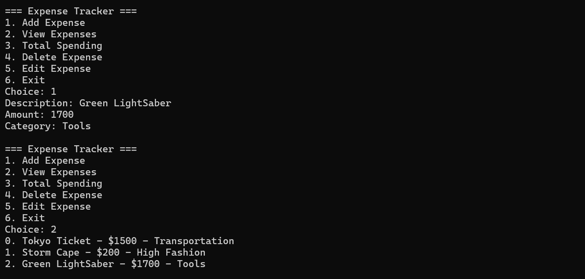

Project Overview
This project is a command-line Expense Tracker built in C++ designed to demonstrate object-oriented programming, file persistence, and CRUD operations.
Users can add, view, edit, and delete expenses while tracking total spending. Data is saved to disk, allowing the program to retain state between sessions.
Tech Stack
C++ STL (vector, string) File I/O (fstream) OOP Design CLI ApplicationFeatures
Architecture
main.cpp
↓
ExpenseManager (logic layer)
↓
Expense objects (data model)
↓
File storage (load/save persistence)
Challenges & Solutions
Fixed by ensuring function declarations in
.h matched implementations in .cpp.
Resolved using
cin.ignore() to manage mixed input types.
Solved by standardizing file paths and implementing consistent serialization.
Fixed uninitialized menu input by properly capturing user choice each loop iteration.
Key Learnings
- Object-oriented programming in C++
- Multi-file project structure
- STL containers and iteration
- File input/output and persistence
- Debugging compilation and linkage errors
- Managing application state in CLI systems
Future Improvements
Final Summary
This project demonstrates a full software development cycle in C++: design, implementation, debugging, persistence, and iterative refinement. It serves as a foundational example of object-oriented programming and real-world application structure. If you would like to try to run the C++ Expense Manager yourself or just review the code, you can download the files directly by clicking on the link below. Additional screenshots of the program in action are down below as well.
Download//Repository Links
Screenshots

